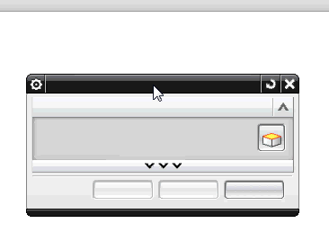

The Dialog Rail is no longer available in NX. You can now snap a dialog box to:
The horizontal and vertical borders of the graphics window.
The vertical border of the Resource bar.
For instance, to snap a dialog box to the horizontal border of the graphics window, drag the dialog box title bar close to the top of the graphics window. The dialog box snaps into place.

If you do not want to snap a dialog box, press the Ctrl key and drag the dialog box to your preferred location.
|
Note |
Dialog box snapping is supported only in the Windows operating system. |
You can keep a dialog box in a fixed place in the NX user-interface layout.